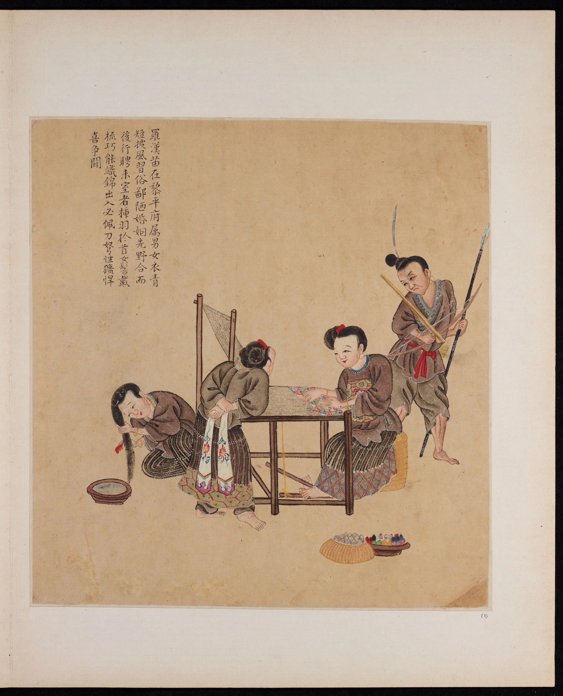

01
图像优先 Image first
所有记录都保留原始扫描页，题记另提供局部放大图。图像中的文字才是史料，搜索索引只是协助定位。
将图像、竖排题记、机器识别文本与英文翻译放在一起阅读。检索只为找到史料；引用之前，请回到原图核对每一个字。
A searchable working edition of Qing-era Miao illustrations and their handwritten captions.
进入图像目录
多图册目录 · 跨 PDF 全文检索
所有记录都保留原始扫描页，题记另提供局部放大图。图像中的文字才是史料，搜索索引只是协助定位。
各图册机器 OCR 均属待校稿，可能存在误字、漏字与竖排列序错误；只有标为「人工试校」的记录拥有独立校订文本，且不等于最终定本。
译文是辅助理解的 AI 英文试稿，不是可引用的原始材料。历史题记中的族称和贬抑性描述应视为编绘者的立场，而非对现实社群的客观描述。
图册可能来自不同的 PDF 或馆藏版本。请逐册核查藏所、版本、著录和扫描件的传播许可；网页 OCR 不能替代原件。
在画幅详情中可以修改中文转录、英文译文和校勘说明。修改只保存在当前浏览器的本地存储，不会同步到 GitHub 或其他访客。可导出 JSON 保存校订。